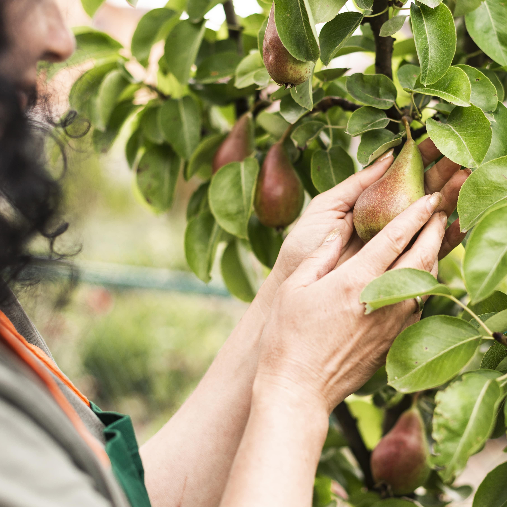
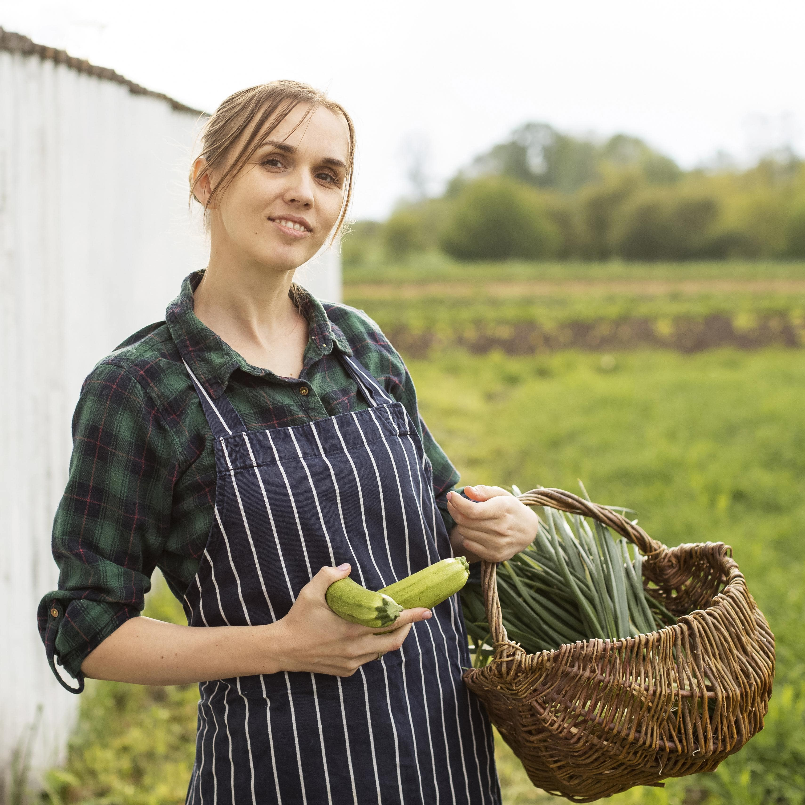
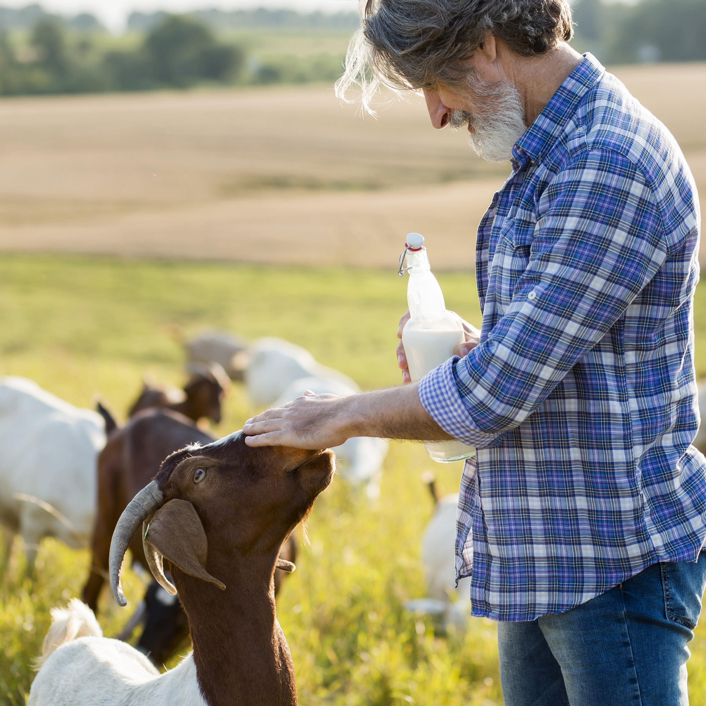

Les vergers du soleil
Installée à Saint-Marcel-d'Ardèche, cette fruitière est dediée à la culture de fruits test que les pommes, les poires, les cerises et les abricots. Leurs fruits de saison, fraichement cueillis, sont utilisés dans la préaration de plats sucrés ou salés, des salades de fruits aux accompagnements pour les viandes et volailles.

Ferme de la Vallée Heureuse
Située à Saint-Martin-d'Ardèche, cette ferme propose une grande variété de produits locaux tels que des légumes, des fruits, des fromages de chèvre, des oeufs et des confitures. Leurs produits frais et de qualité nous permettent de préparer des plats délicieux rien que pour vos papilles.

La Vache Enchantée
Cette ferme laitière est située à Saint-Michel-de-Chabrillanoux, en Ardèche. Ils se spécialisent dans l'élevage de vaches laitières et la production de lait frais et de produits laitiers artisanaux tels que le fromages, le beurre et la crème. les produits laitiers de la Vache Enchantée sont réputés pour leur qualité et leur goût authentique.

La Ferme des Collines
Installée à Lamastre, cette ferme est spécialisée dans l'élevage de volailles et propose des produits comme des poulets, des pintades, des canards et des oeufs. Nous utilisons leur viandes de qualité supérieure afin de vous concocter des plats savoureux et sains.